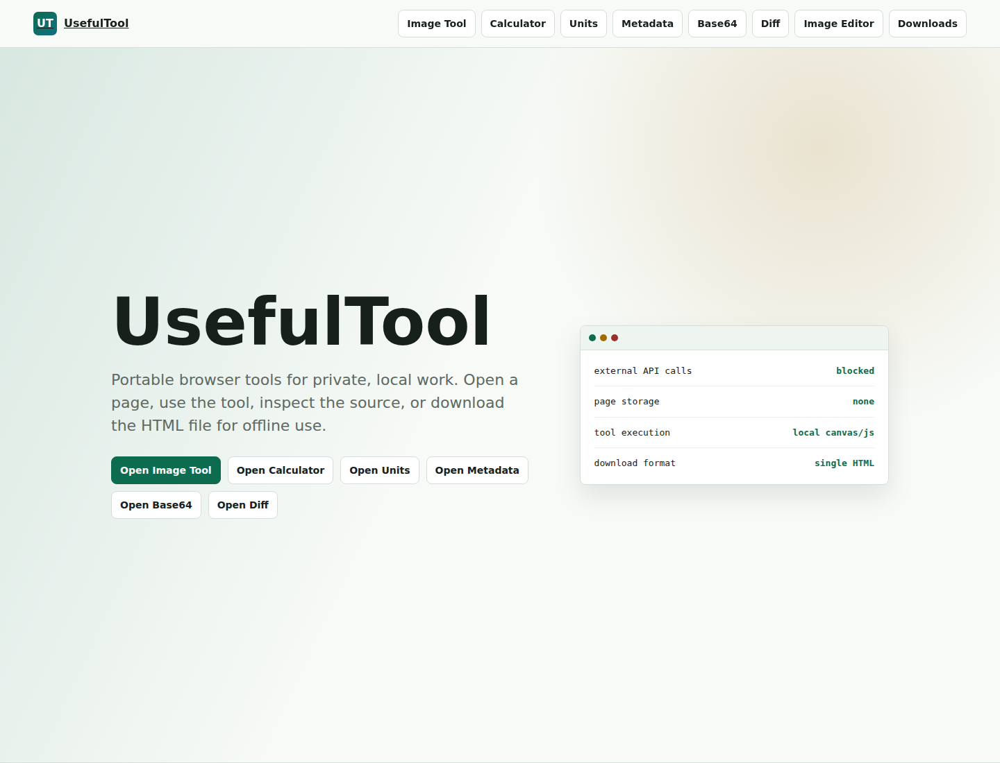
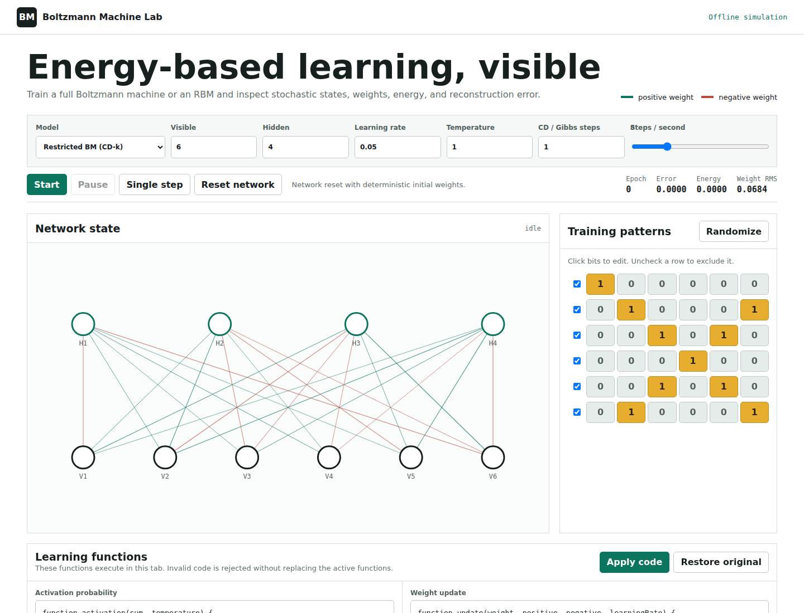
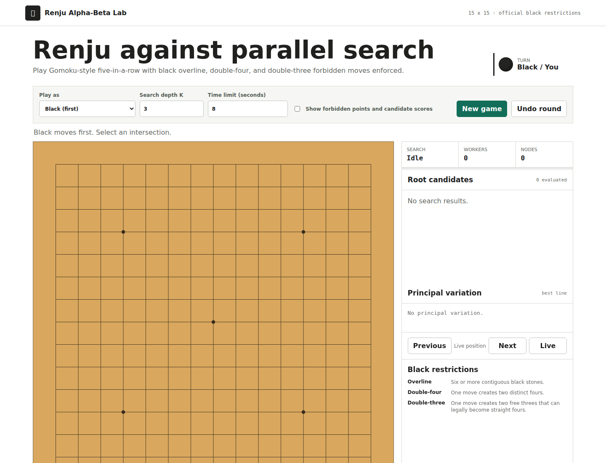
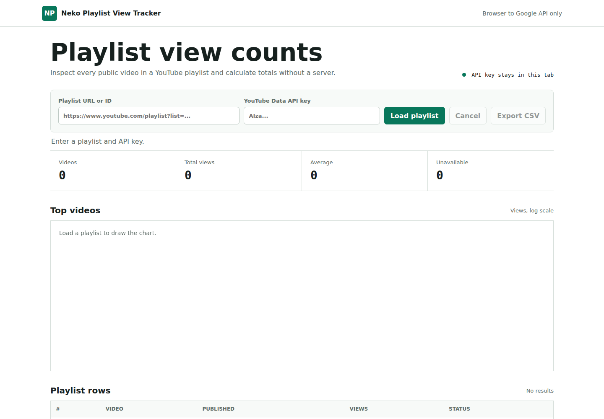

UsefulTool
Private local converters, metadata inspection, file diff, WebRTC chat, image editing, and PDF workflows.
Open source project index
Android utilities, private browser tools, machine-learning visualizations, games, and practical courseware.
Showing all 8 projects

Private local converters, metadata inspection, file diff, WebRTC chat, image editing, and PDF workflows.

Compare full BM Gibbs phases with RBM CD-k while inspecting stochastic units, signed weights, energy, and custom update functions.

Play official black-restriction Renju against a parallel root alpha-beta search with progress, principal variation, and replay.

Load complete playlist statistics in the browser, review aggregate view counts, graph top videos, and export CSV.
Reliable foreground recording for long sessions, hourly output, interruption recovery, and local noise-removal tools.
Date-focused to-dos, diary, sleep, water, special-event history, analysis, and complete local JSON backup.
Local focus schedules and visible reminders with configurable companion packs, overlays, and explicit privacy boundaries.
Runnable workbooks covering modern OOP, decorators, concurrency, image processing, annotations, and Spring Boot.